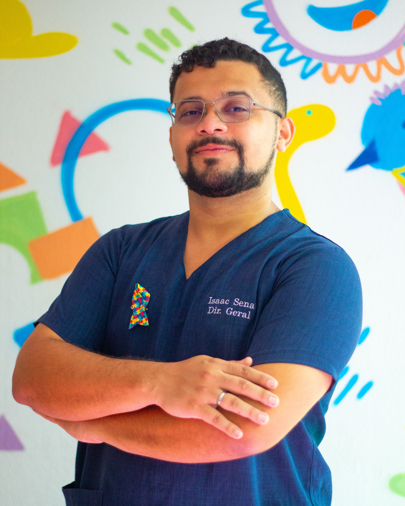
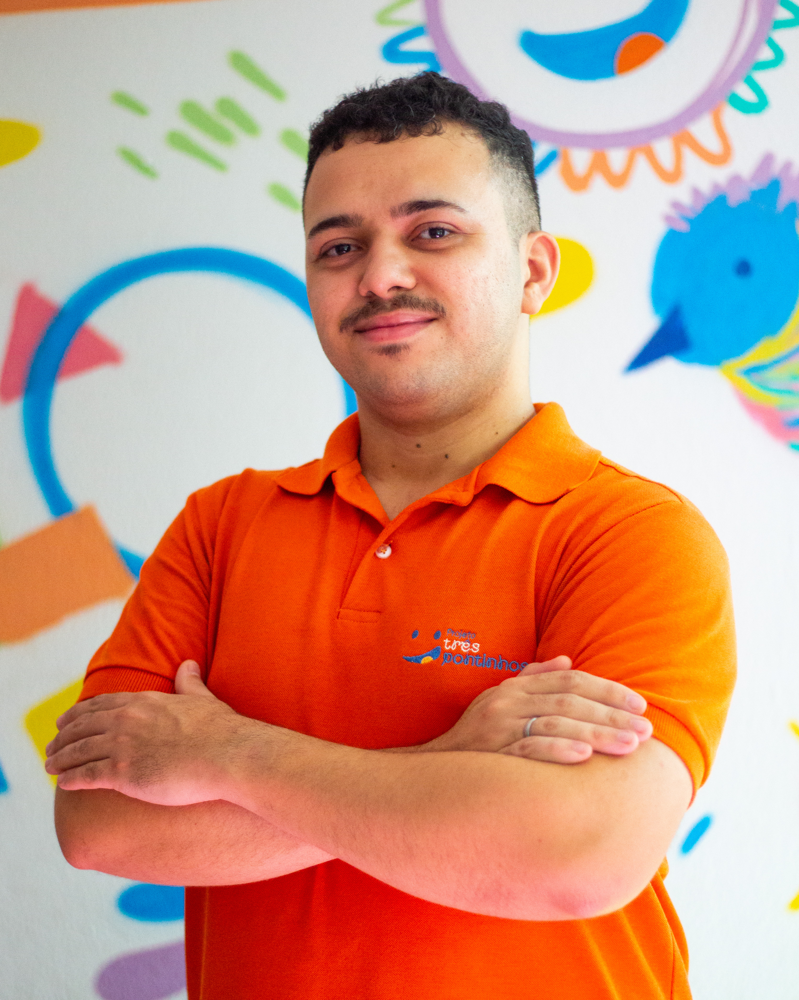

Acolher
Receber cada criança e família com empatia, respeito e escuta genuína.
Somos o Instituto Três Pontinhos
O Instituto Três Pontinhos é uma associação privada e de iniciativa social independente, dedicada ao acolhimento e desenvolvimento de crianças e adolescentes de até 14 anos no bairro Joaquim Távora, em Fortaleza. Oferecemos atendimentos terapêuticos, serviços e projetos sociais próprios para ajudar o acesso ao cuidado, à educação e à inclusão para as famílias atípicas.

Apoiar famílias atípicas que convivem com TEA, TDAH, TOD e outros transtornos do neurodesenvolvimento, garantindo acesso a terapias acessíveis e a programas sociais que promovem inclusão, saúde, direitos e capacitação para melhor qualidade de vida.
Nossa meta é ser reconhecido como um lugar onde terapia, cuidado e inclusão realmente mudam a vida de famílias atípicas, não só de Fortaleza, mas de todo o Brasil. Queremos que mais famílias tenham acesso à qualidade de vida por meio da saúde, do direito e da educação — e que novas oportunidades e portas se abram para cada criança, cada mãe e cada história que chegar até nós.
Três pilares que sustentam tudo o que fazemos com as famílias.
Receber cada criança e família com empatia, respeito e escuta genuína.
Oferecer suporte através de terapias acessíveis e programas que geram autonomia.
Estar presente no processo de cada família, evoluindo junto a cada conquista.
E cada evolução é uma vida transformada.
Corpo Diretivo
Quem conduz nossa missão de acolher, ajudar e acompanhar cada família atípica com dedicação e propósito.

Liderança e gestão estratégica do Instituto. Atua na formulação de parcerias, expansão dos projetos sociais e garantia do cuidado humanizado a cada criança e adolescente atendido.

Responsável pelo apoio à gestão institucional, operações do Instituto e fortalecimento das ações comunitárias, garantindo o acolhimento contínuo e a excelência das atividades sociais.
.JPEG)
Coordenação das rotinas administrativas, agendamentos, acolhimento das famílias e interlocução com o corpo multiprofissional para assegurar a evolução e o bem-estar dos pacientes.
Uma família evolui quando alguém acredita e caminha junto.
Mais de 500 famílias já tiveram seus futuros impactados pelo Instituto.